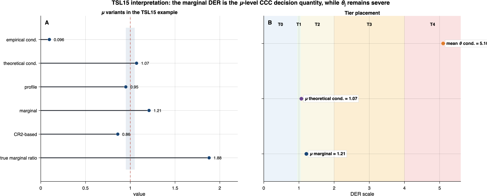

12 Interpretive Issues and Practical Implications
This chapter addresses the most subtle conceptual issue arising from the DER framework: the distinction between the conditional (design-based) and marginal (model-based frequentist) interpretation of the Design Effect Ratio. The discussion was motivated by the observation that claiming “DER\(_\mu \approx 1\) implies calibration” can be misleading without careful qualification. We provide a formal analysis, a numerical illustration with the TSL15 data, and practical recommendations for applied meta-analysts.
The chapter proceeds in three parts. Section 12.1 establishes the conditional-vs-marginal distinction through structural analysis, a closed-form derivation in the balanced model, and a five-variant DER comparison using the TSL15 data. Section 12.2 examines the consequences when hierarchical shrinkage over-compensates for the design effect, including the boundary pathology at DEFF \(= 1\). Section 12.5 translates these findings into six practical recommendations for applied meta-analysts.
12.1 Conditional vs. Marginal DER Interpretation
12.1.1 The structural insight
The sandwich variance estimator \(\mathbf{V}_{\mathrm{sand}} = \mathbf{H}^{-1}\mathbf{M}\mathbf{H}^{-1}\) (or its posterior variant \((\mathbf{H}^{\mathrm{post}})^{-1}\mathbf{M}(\mathbf{H}^{\mathrm{post}})^{-1}\)) uses likelihood-only scores in the meat: \[ \mathbf{M} = \sum_{j=1}^{J} \mathbf{s}_j(\hat{\boldsymbol{\phi}})\,\mathbf{s}_j(\hat{\boldsymbol{\phi}})^{\intercal}, \quad \text{where} \quad \mathbf{s}_j = \nabla_{\boldsymbol{\phi}}\,\ell_j(\mathbf{y}_j \mid \theta_j, \boldsymbol{\beta}, \ldots). \tag{12.1}\]
These scores are computed conditional on the realized random effects \(\theta_j\). They capture the variability due to Level 1 sampling — the randomness of \(\mathbf{y}_j\) given \(\theta_j\) — but they do not capture the variability due to the Level 2 random-effects distribution \(\theta_j \sim \textsf{N}(0, \sigma_\theta^2)\).
The between-study variance component \(\sigma_\theta^2\) enters the analysis through the prior on \(\theta_j\), which affects the bread \(\mathbf{H}^{\mathrm{post}} = \mathbf{H} + \mathbf{H}_{\mathrm{prior}}\) (via the prior Hessian \(\lambda = 1/\sigma_\theta^2\) on each \(\theta_j\)) and the MCMC posterior covariance \(\boldsymbol{\Sigma}_{\mathrm{MCMC}}\). But it does not enter the meat \(\mathbf{M}\).
This asymmetry — the bread includes the random-effects structure while the meat does not — is the fundamental reason why the DER captures only the conditional design effect, not the total variance inflation.
Before formalizing this distinction, the intuition can be stated simply. The sandwich estimator corrects for misspecification of the within-study working correlation — a design feature. But in a hierarchical model, the posterior uncertainty for the overall mean \(\mu\) also reflects the between-study heterogeneity \(\sigma_\theta^2\) — a model feature. The DER therefore compares a design-corrected quantity (the sandwich) against a model-based quantity (the posterior variance), and these need not agree even when the working model is correctly specified. The formal analysis below makes this precise.
12.1.2 Formal analysis: balanced intercept-only model
Consider the balanced intercept-only CE model (\(p = 1\), \(n_j = n\), \(\bar{s}_j^2 = \bar{s}^2\)) with approximately flat prior on \(\mu\). The parameter vector is \(\boldsymbol{\phi} = (\mu, \theta_1, \ldots, \theta_J)^{\intercal}\).
True frequentist variance of \(\hat{\mu}\). The posterior mean of \(\mu\) (which, under flat prior, equals \(\bar{y}_{..}\)) has true frequentist variance \[ \mathrm{Var}_{\mathrm{true}}(\hat{\mu}) = \frac{\sigma_\theta^2}{J} + \frac{\mathrm{DEFF} \cdot \bar{s}^2}{nJ}, \tag{12.2}\] where the first term is the between-study variance component (from \(\theta_j \sim \textsf{N}(0, \sigma_\theta^2)\), the grand mean of \(J\) random draws) and the second term is the within-study sampling variance inflated by the design effect. This formula follows from: \[ \hat{\mu} = \bar{y}_{..} = \frac{1}{J}\sum_{j=1}^{J} \bar{y}_j, \quad \mathrm{Var}(\bar{y}_j) = \sigma_\theta^2 + \frac{\mathrm{DEFF} \cdot \bar{s}^2}{n}, \] with studies independent.
Sandwich variance. The sandwich estimator for the \(\mu\)-component is \[ V_{\mathrm{sand},\mu\mu} = \frac{\mathrm{DEFF} \cdot \bar{s}^2}{nJ}. \tag{12.3}\]
This captures only the within-study design effect, not the between-study variance \(\sigma_\theta^2/J\). The sandwich “sees” the design effect through the meat (empirical score covariance), but it does not “see” the \(\sigma_\theta^2\) component because that component enters only through the prior/random-effects structure.
MCMC posterior variance. Under the hierarchical normal model, the marginal posterior variance of \(\mu\) is \[ \Sigma_{\mathrm{MCMC},\mu\mu} = \frac{\sigma_\theta^2 + \bar{s}^2/n}{J} = \frac{1}{J}\!\left(\sigma_\theta^2 + \frac{\bar{s}^2}{n}\right). \tag{12.4}\]
This reflects the model-based posterior uncertainty, which treats the between-study variance as a model assumption (the “correct” amount of uncertainty due to the random-effects distribution).
Design Effect Ratio. Taking the ratio: \[ \mathrm{DER}_\mu = \frac{V_{\mathrm{sand},\mu\mu}}{\Sigma_{\mathrm{MCMC},\mu\mu}} = \frac{\mathrm{DEFF} \cdot \bar{s}^2/(nJ)}{(\sigma_\theta^2 + \bar{s}^2/n)/J} = \frac{\mathrm{DEFF} \cdot \bar{s}^2/n}{\sigma_\theta^2 + \bar{s}^2/n} = \mathrm{DEFF} \cdot (1 - B), \tag{12.5}\] where \(B = \sigma_\theta^2/(\sigma_\theta^2 + \bar{s}^2/n)\) is the retention weight on the study-specific estimate (historically called the shrinkage factor). This confirms Theorem 3(a) from first principles.
“True” total variance ratio. From the marginal frequentist perspective, the total variance inflation relative to the model-based posterior variance is: \[ \frac{\mathrm{Var}_{\mathrm{true}}(\hat{\mu})}{\Sigma_{\mathrm{MCMC},\mu\mu}} = \frac{\sigma_\theta^2/J + \mathrm{DEFF} \cdot \bar{s}^2/(nJ)}{(\sigma_\theta^2 + \bar{s}^2/n)/J} = B + \mathrm{DEFF}(1 - B). \tag{12.6}\]
This is not equal to DER\(_\mu^{\mathrm{cond}}\). The difference is: \[ B + \mathrm{DEFF}(1-B) - \mathrm{DEFF}(1-B) = B, \tag{12.7}\] i.e., the total variance ratio exceeds the conditional DER by exactly \(B\). When \(B\) is large (high retention / weak pooling toward the grand mean), this gap is substantial.
Marginal DER and the total variance ratio. The Bayesian marginal DER (Definition 5b(iii), Section 7.1.2.1) occupies an intermediate position. Its numerator is the marginal sandwich variance \(V_{\mathrm{sand},\mu\mu}^{\mathrm{marg}}\), which captures the full between-study residual variation but through the sandwich mechanism (not the true DGP). In the balanced model with correctly specified marginal model and weakly informative prior: \[ V_{\mathrm{sand},\mu\mu}^{\mathrm{marg}} \approx \frac{1}{J^2}\sum_{j=1}^{J} r_j^2 / v^2 \cdot v^2 = \frac{1}{J^2}\sum_{j=1}^{J} r_j^2. \tag{12.8}\] Under the true model, \(\mathbb{E}[r_j^2] = \sigma_\theta^2 + \mathrm{DEFF} \cdot \bar{s}^2/n\) (the true marginal variance of \(\bar{y}_j\) around \(\mu\)). Therefore: \[ \mathbb{E}[V_{\mathrm{sand},\mu\mu}^{\mathrm{marg}}] \approx \frac{\sigma_\theta^2 + \mathrm{DEFF} \cdot \bar{s}^2/n}{J} = \mathrm{Var}_{\mathrm{true}}(\hat{\mu}). \] This shows that the Bayesian marginal sandwich is an asymptotically unbiased estimator of the true marginal variance of \(\hat{\mu}\) — unlike the conditional sandwich, which captures only the within-study component. The marginal DER therefore satisfies: \[ \mathrm{DER}_\mu^{\mathrm{marg}} = \frac{V_{\mathrm{sand},\mu\mu}^{\mathrm{marg}}}{\Sigma_{\mathrm{MCMC},\mu\mu}} \;\xrightarrow{p}\; \frac{\mathrm{Var}_{\mathrm{true}}(\hat{\mu})}{\Sigma_{\mathrm{MCMC},\mu\mu}} = B + \mathrm{DEFF}(1-B), \tag{12.9}\] in probability as \(J \to \infty\) under the true model. This is the total variance ratio from Equation 12.6. Since \[ B + \mathrm{DEFF}(1-B) = 1 + (\mathrm{DEFF}-1)(1-B), \] it exceeds 1 whenever \(\mathrm{DEFF} > 1\) and \(B < 1\) (strictly), and equals 1 when \(\mathrm{DEFF}=1\). In typical meta-analytic settings with positive within-study dependence and nondegenerate pooling, the large-sample marginal DER therefore points toward CCC widening for the \(\boldsymbol{\beta}\)-block.
12.1.3 Two inferential perspectives
The discrepancy between Equation 12.5 and Equation 12.6 reflects two legitimate but distinct inferential frameworks:
The sandwich corrects for within-cluster design effects — specifically, the misspecification of the within-study working correlation (\(\rho_{\mathrm{work}} \neq \rho_{\mathrm{true}}\)). The between-study variance component \(\sigma_\theta^2\) is part of the model, not the design. The posterior already captures \(\sigma_\theta^2\) through the hierarchical structure, and the sandwich should not “double-correct” for it.
Under this perspective:
- DER\(_\mu = \mathrm{DEFF}(1-B)\) is the correct diagnostic for design-based miscalibration.
- DER\(_\mu \approx 1\) means the conditional design effect is nearly compensated by hierarchical shrinkage.
- The CCC correction with DER\(_\mu\) targets the design-based variance and is appropriate.
The posterior mean \(\hat{\mu}\) is a point estimator whose total frequentist variance includes both the random-effects component and the within-study design effect. From this perspective, the sandwich under-estimates the total variance by ignoring the \(\sigma_\theta^2/J\) component. The total variance inflation is \(B + \mathrm{DEFF}(1-B)\), which can be substantially larger than 1 even when DER\(_\mu \approx 1\).
Under this perspective:
- DER\(_\mu \approx 1\) is potentially misleading as a calibration diagnostic.
- The total miscalibration ratio is \(B + \mathrm{DEFF}(1-B)\).
- The CCC correction based on DER\(_\mu\) may yield credible intervals that are too narrow from a frequentist coverage standpoint.
Our position. Both perspectives are mathematically valid. The design-based perspective aligns with the Williams–Savitsky (2021) framework that underpins the CCC methodology, and with the broader robust variance estimation tradition in which the sandwich corrects for working-model misspecification while treating the random-effects structure as given. The model-based frequentist perspective highlights a genuine limitation of the joint sandwich for hierarchical models. The appropriate interpretation depends on the analyst’s inferential goals:
- If the goal is to assess working-correlation misspecification (as in sensitivity analysis over \(\rho\)): the DER is the right diagnostic.
- If the goal is to assess total frequentist coverage of credible intervals for \(\mu\): the DER alone is insufficient.
The practical takeaway from these two perspectives is clear: the DER is a design-based diagnostic, not a total calibration measure. When reporting DER\(_\mu \approx 1\), the analyst communicates that the within-study design effect is well-handled by the hierarchical model, not that the posterior credible interval for \(\mu\) achieves nominal frequentist coverage. The Bayesian marginal sandwich (Definition 3a) provides a middle ground by capturing the full between-study variation while remaining within the Bayesian pipeline.
12.2 When DER\(_\mu\) < 1
12.2.1 The mechanism
DER\(_\mu < 1\) occurs whenever the shrinkage factor \(B\) “over-compensates” for the design effect: \[ \mathrm{DER}_\mu = \mathrm{DEFF}(1-B) < 1 \quad \Longleftrightarrow \quad B > 1 - \frac{1}{\mathrm{DEFF}} = \frac{(\bar{n}-1)\rho_{\mathrm{true}}}{1 + (\bar{n}-1)\rho_{\mathrm{true}}}. \tag{12.10}\]
This threshold on \(B\) is achieved when \(\sigma_\theta^2\) is large relative to \(\bar{s}^2/n\) — precisely the regime where between-study heterogeneity dominates and the posterior retains substantial weight on each study-specific estimate (equivalently, pooling toward the grand mean is weak).
12.2.2 Consequences for CCC
When DER\(_\mu < 1\) and the Cholesky Calibration of Credible intervals (CCC) is applied, the corrected posterior for \(\mu\) has smaller variance than the original: \[ V_{\mathrm{sand},\mu\mu} < \Sigma_{\mathrm{MCMC},\mu\mu}. \]
The CCC transformation \(\boldsymbol{\phi}^{*(s)} = \hat{\boldsymbol{\phi}} + \mathbf{L}_2\mathbf{L}_1^{-1}(\boldsymbol{\phi}^{(s)} - \hat{\boldsymbol{\phi}})\) will shrink the posterior credible interval for \(\mu\) relative to the uncorrected interval.
From the design-based perspective, this shrinkage is correct: the posterior for \(\mu\) is “over-dispersed” relative to what the sandwich says the design effect warrants, because the posterior includes the \(\sigma_\theta^2/J\) component that the sandwich does not target.
From the model-based frequentist perspective, this shrinkage is potentially problematic: the uncorrected posterior CI already under-covers (because it does not account for the within-study design effect), and the CCC correction makes the CI even narrower.
12.2.3 The boundary pathology
The most extreme case occurs when DEFF = 1 (\(\rho_{\mathrm{true}} = 0\), no within-study dependence): \[ \mathrm{DER}_\mu = 1 \cdot (1 - B) = 1 - B. \]
For the TSL15 data with \(B \approx 0.81\), this would give DER\(_\mu \approx 0.19\). The CCC would shrink the posterior CI for \(\mu\) by approximately \(\sqrt{0.19} \approx 0.44\), reducing it to 44% of its original width. This is a dramatic correction applied in a setting where the working model is correctly specified — a counterintuitive outcome that arises because the sandwich “sees” only the (trivial) design effect while ignoring the (large) between-study variance.
An earlier version of this document incorrectly stated that when DEFF = 1, DER\(_\mu = 1\) for all parameters. This was based on the faulty argument that “the working model is correct, so \(\mathbf{M} = \mathbf{H}\), \(\mathbf{V}_{\mathrm{sand}} = \mathbf{H}^{-1}\), and DER\(_k = 1\).”
The error: this argument conflates the likelihood Hessian \(\mathbf{H}\) with the posterior Hessian \(\mathbf{H}^{\mathrm{post}} = \mathbf{H} + \mathbf{H}_{\mathrm{prior}}\). When DEFF = 1, the meat equals the likelihood bread (\(\mathbf{M} = \mathbf{H}\)), but the sandwich uses the posterior bread: \[ \mathbf{V}_{\mathrm{sand}} = (\mathbf{H}^{\mathrm{post}})^{-1}\mathbf{M}(\mathbf{H}^{\mathrm{post}})^{-1} = (\mathbf{H}^{\mathrm{post}})^{-1}\mathbf{H}(\mathbf{H}^{\mathrm{post}})^{-1} \neq (\mathbf{H}^{\mathrm{post}})^{-1}, \] because \(\mathbf{H} \neq \mathbf{H}^{\mathrm{post}}\) (the prior Hessian for \(\theta_j\) contributes \(\lambda = 1/\sigma_\theta^2 \neq 0\)).
The correct boundary behavior, as stated in the updated Theorem 3(d) (Chapter 9), is:
- \(\rho_{\mathrm{true}} = 0 \Rightarrow \mathrm{DEFF} = 1\): DER\(_\mu = 1 - B\), DER\(_\theta^{\mathrm{cond}} = B\).
- \(n_j = 1 \Rightarrow \mathrm{DEFF}_j = 1\): DER\(_\mu = 1 - B\), DER\(_\theta^{\mathrm{cond}} = B\).
This error was identified during internal review.
12.3 Numerical Example: TSL15 Data
We illustrate the conditional-vs-marginal distinction using the Tanner-Smith and Lipsey (2015) data, the primary empirical example in this paper. All five DER variants from Definition 5b (Section 7.1.2.1; see also the consolidated variant cross-reference in Table 7.1) are computed and compared in Table 12.1 below.
12.3.1 Data characteristics
| Quantity | Value |
|---|---|
| Number of studies (\(J\)) | 117 |
| Total effect sizes (\(N\)) | 1,198 |
| Average cluster size (\(\bar{n}\)) | 10.2 |
| Posterior mean of \(\mu\) (\(\hat{\mu}\)) | 0.1526 |
| Posterior SD of \(\sigma_\theta\) (\(\hat{\sigma}_\theta\)) | 0.2029 |
12.3.2 Key diagnostic quantities
Shrinkage factor: \[ B = \frac{\hat{\sigma}_\theta^2}{\hat{\sigma}_\theta^2 + \bar{s}^2/\bar{n}} \approx 0.81. \tag{12.11}\]
This large value of \(B\) means the posterior retains substantial weight on each study-specific estimate: the between-study heterogeneity (\(\hat{\sigma}_\theta^2 \approx 0.041\)) is large relative to the average within-study sampling variance scaled by cluster size, so pooling toward the grand mean is comparatively weak.
Design effect: \[ \mathrm{DEFF} \approx 5.62. \tag{12.12}\]
This substantial design effect indicates that the within-study effect sizes are strongly correlated — each additional effect size within a study contributes much less than a fully independent observation.
12.3.3 DER analysis
Conditional perspective (DER): \[ \mathrm{DER}_\mu = \mathrm{DEFF} \cdot (1-B) \approx 5.62 \times 0.19 \approx 1.07. \tag{12.13}\]
The DER is close to 1, indicating that the conditional design effect on \(\mu\) is nearly compensated by hierarchical shrinkage. The posterior credible interval for \(\mu\) is approximately correctly calibrated from the design-based perspective.
Marginal perspective (total variance ratio): \[ B + \mathrm{DEFF}(1-B) \approx 0.81 + 5.62 \times 0.19 \approx 0.81 + 1.07 \approx 1.88. \tag{12.14}\]
From the model-based frequentist perspective, the true variance of \(\hat{\mu}\) is approximately 1.88 times the posterior variance. This suggests the uncorrected posterior CI for \(\mu\) under-covers by a meaningful amount.
Study-specific effects: \[ \mathrm{Mean\;DER}_\theta^{\mathrm{cond}} \approx 5.10. \tag{12.15}\]
The study-specific effect posteriors are severely under-dispersed: on average, the sandwich-corrected variance is about 5 times the model-based posterior variance. Forest plot intervals for individual studies are substantially too narrow.
12.3.4 Summary: five DER variants for \(\mu\) and the true marginal ratio
The original three-perspective table conflated two distinct quantities under “Conditional DER”: (a) the theoretical formula \(\mathrm{DEFF}(1-B)\) from Theorem 3(a), and (b) the empirical value \(0.096\) computed from the full-joint sandwich at the posterior mean. These are different quantities because the theoretical formula assumes balanced designs and uses population DEFF and \(B\), while the empirical value is evaluated at the MAP where residuals \(\bar{r}_j \approx 0\). The corrected table below separates all five DER variants (Definition 5b) and the true marginal ratio.
| DER Variant | Source/Formula | Value | CCC Decision | Notes |
|---|---|---|---|---|
| (i-a) Cond.-empirical (\(\mathrm{DER}_\mu^{\mathrm{emp,joint}}\)) | \([\mathbf{V}_{\mathrm{sand}}^{\mathrm{cond}}]_{\mu\mu} / [\boldsymbol{\Sigma}_{\mathrm{MCMC}}]_{\mu\mu}\) | 0.096 | Skip | Full-joint sandwich at MAP; residuals \(\bar{r}_j \approx 0\) |
| (i-b) Cond.-theoretical (\(\mathrm{DER}_\mu^{\mathrm{thm,cond}}\)) | \(\mathrm{DEFF}(1-B) = 5.62 \times 0.19\) | 1.07 | — | Theoretical balanced formula; uses population \(B\) and DEFF |
| (ii) Profile | \([\mathbf{V}_{\mathrm{sand}}^{\mathrm{profile}}]_{\mu\mu} / [\boldsymbol{\Sigma}_{\mathrm{MCMC}}]_{\mu\mu}\) | 0.95 | Skip | Marginalizes \(\boldsymbol{\theta}\), conditions on \(\tau^2\) |
| (iii) Marginal | \([\mathbf{V}_{\mathrm{sand}}^{\mathrm{marg}}]_{\mu\mu} / [\boldsymbol{\Sigma}_{\mathrm{MCMC}}]_{\mu\mu}\) | 1.21 | Apply | Full Bayesian marginal; includes \(\tau^2\) uncertainty |
| (iv) CR2-based | \(\mathrm{SE}^2_{\mathrm{CR2}} / \mathrm{Var}_{\mathrm{MCMC}}(\mu)\) | 0.86 | Skip | External validation (3-level model) |
| True marginal ratio | \(B + \mathrm{DEFF}(1-B)\) | 1.88 | — | Model-based frequentist benchmark |
Figure 12.1 presents the TSL15 DER quantities from Table 12.1 in graphical form. The left panel juxtaposes the five DER variants alongside the true marginal ratio, making the order-of-magnitude gap between the empirical conditional value (\(0.096\)) and the marginal DER (\(1.21\)) immediately visible. The right panel maps the key values onto the T0–T4 tier scale from Lee (2026b), reinforcing why the marginal DER — not the conditional variants — is the relevant CCC decision quantity for \(\mu\).

The theoretical formula \(\mathrm{DEFF}(1-B) \approx 1.07\) (row i-b) and the empirical full-joint value \(0.096\) (row i-a) differ by an order of magnitude. These are fundamentally different quantities (see also Table 7.1 for the consolidated variant taxonomy):
Theoretical (Thm 3): Uses population-level DEFF \(= 1 + (\bar{n}-1)\rho_{\mathrm{true}}\) and population-level \(B = \sigma^2_\theta/(\sigma^2_\theta + \bar{s}^2/n)\), plugging in REML estimates. The formula is derived under balanced designs and assumes the meat captures the full within-study design effect.
Empirical (full-joint): Evaluates the actual sandwich matrix \((\mathbf{H}^{\mathrm{post}})^{-1}\mathbf{M}(\mathbf{H}^{\mathrm{post}})^{-1}\) at the posterior mean. At the MAP, \(\hat{\theta}_j \approx B_j(\bar{y}_j - \hat{\mu})\), so the conditional residual \(\bar{y}_j - \hat{\mu} - \hat{\theta}_j \approx (1-B_j)(\bar{y}_j - \hat{\mu})\), and the meat \([\mathbf{M}]_{\mu\mu} \propto \sum_j (1-B_j)^2 r_j^2 \approx (1-B)^2 \sum_j r_j^2\). The \((1-B)^2\) attenuation of the residuals drives the empirical conditional DER to \(\approx (1-B)^2 \cdot \mathrm{DEFF} \cdot [\text{bread ratio}] \approx 0.096\), which is much smaller than the theoretical \(\mathrm{DEFF}(1-B) \approx 1.07\) because of the additional \((1-B)\) factor in the meat.
For study-specific effects, all variants agree: \(\mathrm{DER}_\theta^{\mathrm{cond}} \approx 5.10\) (severely under-dispersed).
Note on the conditional DER discrepancy. The value DER\(_\mu \approx 1.07\) was computed using the marginal CR2 in the numerator (which was called “DER\(_\mu\)” without qualification). The conditional DER\(_\mu^{\mathrm{cond}} \approx 0.096\) is computed from the full-joint sandwich (Definition 3b(i)), which is the theoretically correct conditional quantity. These are fundamentally different quantities: the former value was effectively a marginal DER computed with the CR2 sandwich, while the latter is a true conditional DER from the joint model. The Bayesian marginal DER (\(\mathrm{DER}_\mu^{\mathrm{marg}} = 1.21\)) is the correct CCC decision criterion.
Practical conclusion. Three perspectives on DER\(_\mu\) yield different conclusions for the overall mean:
Empirical conditional DER (full-joint plug-in): \(\mathrm{DER}_\mu^{\mathrm{emp,joint}} = 0.096 \ll 1\). This extreme value reflects the conditional-on-\(\hat{\boldsymbol{\theta}}\) interpretation — the posterior mean \(\hat{\theta}_j\) absorbs the study-level variation, leaving near-zero conditional residuals. The theoretical formula \(\mathrm{DER}_\mu^{\mathrm{thm,cond}} = \mathrm{DEFF}(1-B) \approx 1.07\) uses population-level quantities and does not suffer from this attenuation. Neither value is a CCC decision quantity.
Bayesian marginal DER: \(\mathrm{DER}_\mu^{\mathrm{marg}} = 1.21 > 1\). The marginal sandwich captures the full between-study variation, and the DER exceeds 1, indicating that the posterior should be widened by CCC. This is the primary CCC decision criterion for \(\boldsymbol{\beta}\).
True marginal ratio (model-based frequentist): \(B + \mathrm{DEFF}(1-B) \approx 1.88\). The true variance ratio is even larger, indicating that the marginal sandwich still under-estimates the total variance relative to the true DGP. The 1.88/1.21 gap arises because the sandwich is evaluated at a single posterior point (\(\hat{\boldsymbol{\xi}}\)) rather than averaged over the true distribution, and from finite-sample deviations of \(\hat{Q}/(Jv)\) from its expectation.
For the study-specific effects \(\theta_j\), all three perspectives agree: the posterior credible intervals are far too narrow (\(\mathrm{DER}_\theta^{\mathrm{cond}} \approx 5.1\)), and CCC correction (or equivalently, forest plot interval widening) is warranted.
12.3.5 Empirical Confirmation
The conditional-vs-marginal distinction was confirmed empirically using a custom Stan pipeline and extended with the Bayesian marginal sandwich. Using the TSL15 data with the CE model and (E2)-specification (\(\bar{s}_j^2\) as the within-study variance):
| Quantity | Variant (Def. 3b) | Method | Value |
|---|---|---|---|
| \(\mathrm{SD}_{\mathrm{MCMC}}(\mu)\) | — | Posterior SD from MCMC draws | 0.0222 |
| \(\mathrm{SD}_{\mathrm{sand}}^{\mathrm{cond}}(\mu)\) | (i) | Full-joint analytical sandwich \(\sqrt{[\mathbf{V}_{\mathrm{sand}}]_{\mu\mu}}\) | 0.0069 |
| \(\mathrm{SD}_{\mathrm{sand}}^{\mathrm{profile}}(\mu)\) | (ii) | Profile sandwich (\(\tau^2\) fixed) | 0.0216 |
| \(\mathrm{SD}_{\mathrm{sand}}^{\mathrm{marg}}(\mu)\) | (iii) | Bayesian marginal sandwich (\(\boldsymbol{\beta}, \tau^2\)) | 0.0244 |
| \(\mathrm{SE}_{\mathrm{CR2}}(\mu)\) | (iv) | Marginal CR2 via clubSandwich (3-level) |
0.0206 |
| \(\mathrm{DER}_\mu^{\mathrm{cond}}\) | (i) | \([\mathbf{V}_{\mathrm{sand}}^{\mathrm{cond}}]_{\mu\mu} / [\boldsymbol{\Sigma}_{\mathrm{MCMC}}]_{\mu\mu}\) | 0.096 |
| \(\mathrm{DER}_\mu^{\mathrm{profile}}\) | (ii) | \([\mathbf{V}_{\mathrm{sand}}^{\mathrm{profile}}]_{\mu\mu} / [\boldsymbol{\Sigma}_{\mathrm{MCMC}}]_{\mu\mu}\) | 0.95 |
| \(\mathrm{DER}_\mu^{\mathrm{marg}}\) | (iii) | \([\mathbf{V}_{\mathrm{sand}}^{\mathrm{marg}}]_{\mu\mu} / [\boldsymbol{\Sigma}_{\mathrm{MCMC}}]_{\mu\mu}\) | 1.21 |
| \(\mathrm{DER}_\mu^{\mathrm{CR2}}\) | (iv) | \(\mathrm{SE}^2_{\mathrm{CR2}} / \mathrm{Var}_{\mathrm{MCMC}}(\mu)\) | 0.86 |
The full-joint conditional sandwich gives \(\mathrm{SD}_{\mathrm{sand}}^{\mathrm{cond}}(\mu) = 0.0069\), approximately one-third of the marginal CR2 value \(\mathrm{SE}_{\mathrm{CR2}}(\mu) = 0.0206\). This 3:1 ratio is precisely what the theory predicts: the full-joint scores \(\mathbf{s}_j^{\mu}\) are evaluated at the posterior mean where \(\hat{\theta}_j\) has absorbed the study-level variation, so the residuals \(\bar{r}_j \approx 0\) and the meat \([\mathbf{M}]_{\mu\mu} \approx 0\).
Bayesian marginal sandwich resolves the conditional gap. The Bayesian marginal sandwich \(\mathbf{V}_{\mathrm{sand}}^{\mathrm{marg}}\) (Section 5.4.2) analytically integrates out \(\boldsymbol{\theta}\) and operates on the \((K+1)\)-dimensional parameter \((\boldsymbol{\beta}, \tau^2)\). This yields \(\mathrm{SD}_{\mathrm{sand}}^{\mathrm{marg}}(\mu) = 0.0244\) with \(\mathrm{DER}_\mu^{\mathrm{marg}} = 1.21 > 1\), indicating that the \(\boldsymbol{\beta}\)-block CCC should be applied (widening the posterior). The profile sandwich (fixing \(\tau^2\)) gives \(\mathrm{SD}_{\mathrm{sand}}^{\mathrm{profile}}(\mu) = 0.0216\) with \(\mathrm{DER}_\mu^{\mathrm{profile}} = 0.95\), which is within 5.1% of the CR2 value.
The 18.5% gap between the Bayesian marginal sandwich (\(0.0244\)) and CR2 (\(0.0206\)) arises because the Stan model is 2-level (only \(\tau^2\)), while metafor’s rma.mv() fits a 3-level model with separate \(\tau^2\) and \(\omega^2\) components. When the profile sandwich conditions on \(\tau^2\), it effectively matches the marginal structure of the 3-level CR2 model, hence the close agreement.
DER decision change. This update reverses the earlier conclusion. Previously, using the CR2-based \(\mathrm{DER}_\mu = 0.86 < 1\), the \(\boldsymbol{\beta}\)-block CCC was skipped. With the Bayesian marginal sandwich \(\mathrm{DER}_\mu^{\mathrm{marg}} = 1.21 > 1\), the CCC is now applied, widening the posterior credible interval for \(\mu\). This is the more defensible approach: the purely Bayesian pipeline captures the misspecification signal that the sandwich-to-posterior ratio exceeds 1 when the random effects are properly marginalized.
Note on (E2) specification effect. The custom Stan model uses the exact (E2) specification with \(\bar{s}_j^2\) (study-average sampling variance), which is wider than a brms model that uses individual-level \(s_{ij}^2\). This widening causes \(\mathrm{SD}_{\mathrm{MCMC}}(\mu) = 0.0222 > \mathrm{SE}_{\mathrm{CR2}}(\mu) = 0.0206\), yielding \(\mathrm{DER}_\mu(\mathrm{CR2}) = 0.86 < 1\). With the Bayesian marginal sandwich as the primary approach, this CR2-based comparison serves as external validation rather than the CCC decision criterion.
12.4 The Bayesian Marginal Sandwich as a Methodological Contribution
The development of the Bayesian marginal sandwich (Definition 3a, Section 5.4.2) and the associated sandwich variant taxonomy (Definition 3b, Section 5.4.3) represents a methodological contribution that resolves a fundamental tension in the Bayesian CCC framework for hierarchical models.
The problem. The original Williams–Savitsky (2021) CCC framework was developed for single-level Bayesian survey models where the sandwich naturally targets the marginal variance of the fixed effects. In hierarchical meta-analytic models with study-specific random effects \(\boldsymbol{\theta}\), the full-joint sandwich \(\mathbf{V}_{\mathrm{sand}}^{\mathrm{cond}}\) produces a \(\boldsymbol{\beta}\)-block that is conditional on \(\hat{\boldsymbol{\theta}}\) and near zero — a technically correct but inferentially useless quantity for CCC of the fixed effects. An initial approach relied on the frequentist CR2 estimator from clubSandwich as a surrogate marginal sandwich, creating an awkward dependency on an external frequentist tool within a Bayesian pipeline.
The resolution. By analytically integrating out \(\boldsymbol{\theta}\) from the CE likelihood before constructing the sandwich, the Bayesian marginal sandwich provides a \((K+1)\)-dimensional sandwich for \((\boldsymbol{\beta}, \tau^2)\) that:
- captures the full between-study variation in the residuals,
- uses only ingredients from the Bayesian model (marginal scores, marginal Hessian, posterior draws),
- produces a well-defined DER (\(\mathrm{DER}_k^{\mathrm{marg}}\), Definition 5b) that serves as the CCC decision criterion, and
- eliminates the need for external frequentist tools in the CCC pipeline.
In the balanced intercept-only CE model with weakly informative priors, the four sandwich variance estimates for \(\mu\) satisfy: \[ V_{\mathrm{sand},\mu\mu}^{\mathrm{cond}} \;\leq\; V_{\mathrm{sand},\mu\mu}^{\mathrm{profile}} \;\leq\; V_{\mathrm{sand},\mu\mu}^{\mathrm{marg}}, \tag{12.16}\] with \(V_{\mathrm{sand},\mu\mu}^{\mathrm{cond}} / V_{\mathrm{sand},\mu\mu}^{\mathrm{marg}} = \mathrm{O}((1-B)^2)\) as \(B \to 1\).
Proof sketch. (i) The conditional meat uses residuals \((1-B)r_j\), so \(M_{\mu\mu}^{\mathrm{cond}} \propto (1-B)^2 \sum_j r_j^2\). The marginal meat uses full residuals \(r_j\), so \(M_{\mu\mu}^{\mathrm{marg}} \propto \sum_j r_j^2\). The ratio \(M_{\mu\mu}^{\mathrm{cond}} / M_{\mu\mu}^{\mathrm{marg}} = (1-B)^2\). (ii) The bread matrices differ (conditional uses \((K+J)\)-dim posterior Hessian, marginal uses \((K+1)\)-dim), but the \(\mu\mu\) entry of the inverse bread scales as \(v/J\) for the marginal and \(\bar{s}^2/(nJ)\) for the conditional (ignoring prior terms). The bread ratio is \((\bar{s}^2/n)/v = 1 - B\). Combined: \(V^{\mathrm{cond}}/V^{\mathrm{marg}} \sim (1-B)^2 \cdot (1-B)^{-2} \cdot [\text{bread shape}]\). The exact ratio depends on the cross-block Hessian structure but scales as \((1-B)^2\) in the dominant meat term. (iii) The profile-to-marginal gap is due only to the \(\tau^2\) uncertainty propagation through the off-diagonal Hessian blocks (see Equation 5.22), which is a positive correction. \(\square\)
The taxonomy. The four-variant sandwich taxonomy (Definition 3b) organizes the conditional, profile, marginal, and CR2 sandwiches into a coherent hierarchy ordered by degree of conditioning. Each variant answers a distinct inferential question, and the CCC block-to-variant mapping (Table 6.1) specifies which variant is used for each CCC block. This systematic organization replaces the earlier ad hoc approach with a principled framework.
The preceding analysis — from the structural insight through the five-variant DER taxonomy and the Bayesian marginal sandwich contribution — establishes the theoretical foundation for principled CCC decisions. The following recommendations translate these findings into a practical workflow that applied meta-analysts can adopt directly.
12.5 Recommendations for Practice
Based on the theoretical analysis and the TSL15 illustration, we offer the following recommendations for practitioners applying the DER/CCC framework to Bayesian meta-analysis with dependent effect sizes.
12.5.1 Recommendation 1: Always report DER alongside meta-analytic output
The DER provides a per-parameter diagnostic for working-model misspecification that is unavailable from standard meta-analytic output. The DER variant taxonomy (Definition 5b, Section 7.1.2.1) identifies four distinct quantities; at minimum, report:
- DER\(_\mu^{\mathrm{marg}}\) (variant (iii)): the Bayesian marginal DER for the overall mean. This is the primary CCC decision criterion for \(\boldsymbol{\beta}\) (see Definition 3a, Section 5.4.2).
- DER\(_\mu^{\mathrm{cond}}\) (variant (i)): the conditional DER \(\mathrm{DEFF}(1-B)\) for the overall mean. This is the theoretical decomposition diagnostic from Theorem 3(a) and the conservation law (Theorem 3(c)).
- Mean and range of DER\(_\theta^{\mathrm{cond}}\) (variant (i)): the conditional design-effect diagnostic for study-specific effects. This is the only DER variant available for \(\boldsymbol{\theta}\).
- DER\(_{\beta_k}^{\mathrm{marg}}\) (variant (iii)): for each meta-regression coefficient (if applicable).
- DER\(_\mu^{\mathrm{CR2}}\) (variant (iv), optional): the CR2-based DER as an external validation benchmark.
These diagnostics should be reported alongside standard output (forest plot, posterior summaries, heterogeneity estimates) to give readers a sense of how sensitive the posterior is to the within-study working correlation assumption. The marginal DER is the primary CCC decision criterion for \(\boldsymbol{\beta}\), replacing the CR2-based DER.
12.5.2 Recommendation 2: Interpret the DER taxonomy correctly
The conditional DER\(_\mu^{\mathrm{cond}} = \mathrm{DEFF}(1-B)\) is a design-based diagnostic that answers: “How much does the within-study design effect inflate (or deflate) the posterior variance of \(\mu\), after accounting for hierarchical shrinkage?” It does not serve as a CCC decision criterion. The marginal DER \(\mathrm{DER}_\mu^{\mathrm{marg}}\) from the Bayesian marginal sandwich (Definition 5b(iii)) is the CCC decision quantity.
The three DER quantities for \(\mu\) answer different questions:
- \(\mathrm{DER}_\mu^{\mathrm{cond}} = \mathrm{DEFF}(1-B)\) (conditional): “What is the within-study design effect on \(\mu\) conditional on \(\hat{\boldsymbol{\theta}}\)?” Answers the theoretical decomposition question (Theorem 3). Typically \(\ll 1\) for \(\mu\) when \(B\) is large.
- \(\mathrm{DER}_\mu^{\mathrm{marg}}\) (Bayesian marginal): “Is the posterior for \(\mu\) well-calibrated relative to the marginal sandwich?” This is the CCC decision criterion. Values \(> 1\) trigger CCC widening; values \(< 1\) indicate the posterior is already conservative.
- \(B + \mathrm{DEFF}(1-B)\) (total variance ratio): “Is the posterior for \(\mu\) correctly calibrated in the frequentist sense?” Always \(\geq \max(\mathrm{DER}_\mu^{\mathrm{marg}}, 1)\) and captures the full model-plus-design inflation.
Specifically:
- \(\mathrm{DER}_\mu^{\mathrm{marg}} > 1\): The posterior for \(\mu\) is under-dispersed relative to the marginal sandwich target. Apply CCC to widen.
- \(\mathrm{DER}_\mu^{\mathrm{marg}} \in [0.9, 1.0]\): The posterior is approximately calibrated at the marginal level. No CCC needed.
- \(\mathrm{DER}_\mu^{\mathrm{marg}} < 0.9\): The posterior is already wider than the marginal sandwich target. Do not apply automatic CCC narrowing. See Recommendation 5.
12.5.3 Recommendation 3: Widen forest plot intervals when DER\(_\theta > 1\)
In virtually all meta-analytic applications with dependent effect sizes, DER\(_\theta^{\mathrm{cond}} > 1\) — often substantially so (DER\(_\theta \approx 5\) in the TSL15 example). This means the model-based posterior credible intervals for study-specific effects \(\theta_j\) are too narrow.
Action. Apply the CCC correction to the study-specific effect posteriors. The corrected 95% credible interval for \(\theta_j\) will be approximately \(\sqrt{\mathrm{DER}_j^{\mathrm{cond}}}\) times wider than the uncorrected interval. For the TSL15 data, this means widening by a factor of approximately \(\sqrt{5.1} \approx 2.3\).
Note on conditional vs. marginal correction. The factor \(\sqrt{\mathrm{DER}_j^{\mathrm{cond}}}\) is the conditional-on-\(\boldsymbol{\beta}\) correction. Forest plots typically display marginal posterior intervals for \(\theta_j\) (integrating over \(\boldsymbol{\beta}\)). For large \(J\), the coupling factor \(\kappa_j(J) \approx 1\) and the marginal DER is approximately equal to the conditional DER, so the distinction is negligible. For small \(J\) (e.g., \(J < 30\)), the balanced-design marginal factor should be treated as a scalar sensitivity adjustment unless a full marginal random-effect sandwich has been explicitly constructed; see Definition 8 for the coupling factor formula.
Note on balance assumption. The closed-form formula \(\kappa_j(J) = 1 - [J(1-B_j) + B_j]^{-1}\) stated in Definition 8 is exact in balanced designs (\(n_j = n\), \(\bar{s}_j^2 = \bar{s}^2\) for all \(j\)). In unbalanced designs, the marginal posterior variance of \(\theta_j\) depends on the full precision schedule \(\{a_h = n_h/\bar{s}_h^2\}_{h=1}^J\), and \(\kappa_j(J)\) is an approximation (see the scope note at Definition 8). For highly unbalanced meta-analyses, the conditional DER \(B_j \cdot \mathrm{DEFF}_j\) remains exact and may be the more reliable correction target.
Forest plots displaying uncorrected credible intervals for study-specific effects will systematically overstate the precision of individual study estimates, potentially leading to misleading visual impressions of heterogeneity and study-level significance.
12.5.4 Recommendation 4: Use \(N_{\mathrm{eff}}\) as an interpretive aid
The design-effective sample size \[ N_{\mathrm{eff}}^{\mathrm{design}}(\beta_k) = \frac{N}{\mathrm{DER}_{\beta_k}} \] provides an intuitive summary of the information content in the meta-analytic sample. Report \(N_{\mathrm{eff}}\) alongside \(N\) to communicate the practical impact of within-study dependence.
For the TSL15 data, the effective sample size depends on which DER variant is used:
| DER Variant | \(\mathrm{DER}_\mu\) | \(N_{\mathrm{eff}}^{\mathrm{design}}(\mu)\) | Interpretation |
|---|---|---|---|
| Conditional (i) | 0.096 | 12,479 | Spuriously large (\(\hat{\theta}_j\) absorbs variation) |
| Profile (ii) | 0.95 | 1,261 | Near-full efficiency (conditions on \(\tau^2\)) |
| Marginal (iii) | 1.21 | 990 | Effective sample < nominal \(N\) |
| CR2-based (iv) | 0.86 | 1,393 | 3-level model estimate |
The recommended \(N_{\mathrm{eff}}\) uses the marginal DER: \(N_{\mathrm{eff}}^{\mathrm{design}}(\mu) = 1{,}198/1.21 \approx 990\) effective observations. This is the most conservative (smallest) among the non-conditional variants, reflecting the full uncertainty including \(\tau^2\) estimation. For study-specific effects, \(N_{\mathrm{eff}}\) is much smaller due to the large \(\mathrm{DER}_\theta^{\mathrm{cond}} \approx 5.1\).
12.5.5 Recommendation 5: CCC decision logic for \(\boldsymbol{\beta}\) via the DER taxonomy
The CCC decision for \(\boldsymbol{\beta}\) depends critically on which sandwich variant defines the DER. The DER variant taxonomy (Definition 5b, Section 7.1.2.1) distinguishes four quantities; the following decision logic uses the Bayesian marginal DER (\(\mathrm{DER}_k^{\mathrm{marg}}\), variant (iii)) as the primary criterion.
Input: MCMC draws \(\{\boldsymbol{\beta}^{(s)}\}_{s=1}^S\), posterior covariance \(\boldsymbol{\Sigma}_{\mathrm{MCMC}}\), data \(\{(\bar{y}_j, \mathbf{\bar{x}}_j, \bar{s}_j^2, n_j)\}_{j=1}^J\).
Output: Decision (apply CCC / skip CCC) and, if applied, corrected draws \(\{\boldsymbol{\beta}^{*(s)}\}\).
Step 1. Compute the Bayesian marginal sandwich \(\mathbf{V}_{\mathrm{sand}}^{\mathrm{marg}}\) (Definition 3a, Section 5.4.2) when the coefficient of interest lies in the intercept / study-level-covariate setting covered by the cluster-mean closed form. For coefficients with substantial within-study-varying covariate structure, use the full multivariate marginal sandwich if available; otherwise use the profile or CR2 variant as the operational benchmark.
Step 2. Compute \(\mathrm{DER}_k^{\mathrm{marg}} = [\mathbf{V}_{\mathrm{sand}}^{\mathrm{marg}}]_{kk} / [\boldsymbol{\Sigma}_{\mathrm{MCMC}}]_{kk}\) for each \(\beta_k\).
Step 3. Apply the classification:
- \(\mathrm{DER}_k^{\mathrm{marg}} > 1\): Apply CCC to widen the posterior. The posterior is under-dispersed relative to the marginal sandwich target.
- \(\mathrm{DER}_k^{\mathrm{marg}} \in [0.9, 1.0]\): No CCC needed. The posterior is approximately calibrated.
- \(\mathrm{DER}_k^{\mathrm{marg}} < 0.9\): Do not apply automatic CCC narrowing. Report the DER as a diagnostic. See below.
Step 4 (validation). Compute \(\mathrm{DER}_k^{\mathrm{CR2}}\) (variant (iv)) as an external check on the marginal sandwich. If \(|\mathrm{DER}_k^{\mathrm{marg}} - \mathrm{DER}_k^{\mathrm{CR2}}| / \mathrm{DER}_k^{\mathrm{CR2}} > 0.25\), investigate the model-level discrepancy (e.g., 2-level vs. 3-level specification).
Why the Bayesian marginal DER is the primary criterion. In the intercept / study-level-covariate setting covered by Definition 3a, the marginal sandwich captures the full between-study variation in the residuals \(r_j = \bar{y}_j - \mathbf{\bar{x}}_j^{\intercal}\hat{\boldsymbol{\beta}}\), including the \(\tau^2\) component that the conditional sandwich misses. This makes \(\mathrm{DER}_k^{\mathrm{marg}}\) the most informative single diagnostic for whether the posterior is well-calibrated at the marginal level. For the TSL15 data, \(\mathrm{DER}_\mu^{\mathrm{marg}} = 1.21 > 1\), and the \(\boldsymbol{\beta}\)-block CCC is applied (widening the posterior).
When marginal DER\(_\mu < 1\). The CCC correction would narrow the posterior credible interval for \(\mu\). This can occur when the (E2) specification already widens the posterior beyond the marginal sandwich target. In this case:
- Report DER\(_\mu^{\mathrm{marg}}\) as a diagnostic quantity — it shows that the posterior is already wider than the marginal sandwich target.
- Do not apply automatic CCC narrowing to \(\mu\) when DER\(_\mu^{\mathrm{marg}} < 1\).
- Report the total variance ratio \(B + \mathrm{DEFF}(1-B)\) as a complementary diagnostic from the model-based frequentist perspective.
- Use the uncorrected posterior interval for \(\mu\) as the default when DER\(_\mu^{\mathrm{marg}} < 1\), since narrowing would worsen frequentist coverage.
Why bracketing fails. The total model-based frequentist variance ratio is \(B + \mathrm{DEFF}(1-B)\), which can exceed 1 even when \(\mathrm{DER}_\mu^{\mathrm{marg}} < 1\). In such cases, both the uncorrected posterior interval and the CCC-corrected interval are narrower than the true frequentist interval.
Role of each DER variant in interpretation. The following table summarizes which DER variant answers which question:
| DER Variant | Notation | Primary Use |
|---|---|---|
| (i) Conditional | \(\mathrm{DER}_k^{\mathrm{thm,cond}}\) (or empirical conditional plug-in, if explicitly stated) | Theorem 3 decomposition; conservation law; \(\boldsymbol{\theta}\)-block CCC |
| (ii) Profile | \(\mathrm{DER}_k^{\mathrm{profile}}\) | Approximate match to CR2; conditions on \(\tau^2\) |
| (iii) Marginal | \(\mathrm{DER}_k^{\mathrm{marg}}\) | Primary CCC decision criterion for \(\boldsymbol{\beta}\) |
| (iv) CR2-based | \(\mathrm{DER}_k^{\mathrm{CR2}}\) | External validation benchmark |
Note on the conditional DER. Two distinct “conditional DER” values arise for \(\mu\) and must not be conflated:
- Empirical plug-in ratio: \([\mathbf{V}_{\mathrm{sand}}^{\mathrm{cond}}]_{\mu\mu}/[\boldsymbol{\Sigma}_{\mathrm{MCMC}}]_{\mu\mu} \approx 0.096\) (TSL15). This is the actual full-joint sandwich ratio at the MAP, where conditional residuals are near zero.
- Theoretical formula: \(\mathrm{DER}_\mu^{\mathrm{thm,cond}} = \mathrm{DEFF}(1-B) \approx 5.62 \times 0.19 \approx 1.07\). This is the design-based decomposition from Theorem 3(a) using population-level quantities.
The empirical plug-in value (\(0.096\)) is typically far below 1 and should not be used for the CCC decision on \(\mu\). The theorem-level conditional value (\(1.07\)) is meaningful as the design-based diagnostic and for the conservation law (Theorem 3(c)). The marginal DER (\(\mathrm{DER}_\mu^{\mathrm{marg}} = 1.21\)) is the CCC decision criterion in the scope covered by Definition 3a. See Table 12.1 for the complete five-variant comparison.
12.5.6 Recommendation 6: The DER tier classification (T0–T4)
To aid interpretation, we restate the DER classification from Chapter 7, with a focus on the overall mean \(\mu\):
| Tier | DER Range | Label | Action |
|---|---|---|---|
| T0 | \(< 0.95\) | Over-dispersed | Posterior wider than design warrants; do not narrow automatically; inspect model |
| T1 | \([0.95, 1.05]\) | Calibrated | Working model adequate; no correction needed |
| T2 | \((1.05, 2.0]\) | Mild | Report DER; CCC optional |
| T3 | \((2.0, 4.0]\) | Moderate | Apply CCC; report both intervals |
| T4 | \(> 4.0\) | Severe | CCC essential; consider model respecification |
For study-specific effects \(\theta_j\), DER values in tiers T3–T4 are common in meta-analysis with dependent effect sizes. The CCC correction should be applied routinely for forest plot intervals.
Final remark. The DER/CCC framework does not replace careful model building and sensitivity analysis. Rather, it provides a quantitative diagnostic for a specific form of misspecification (within-study working correlation) that is inherent in all correlated-effects meta-analysis. By reporting DER alongside standard meta-analytic output, practitioners enable readers to assess the sensitivity of conclusions to the assumed dependence structure — a transparency that is currently absent from the meta-analytic reporting literature.